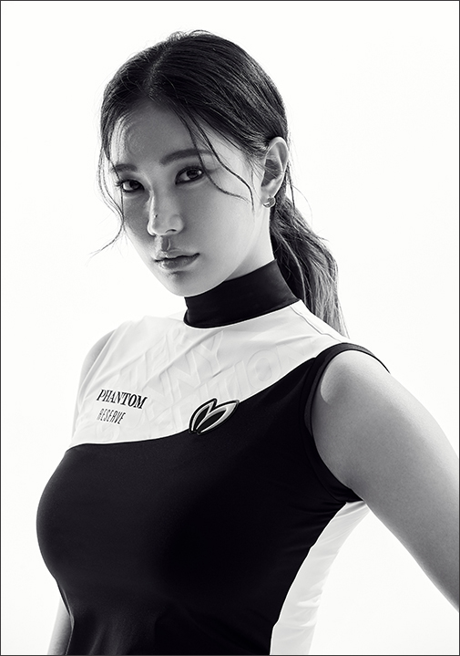

미녀 골퍼' 유현주 (골든블루·26)가 KLPGA '맥콜·용평리조트 오픈 with SBS'에서 아쉽게 컷 탈락하며 대회를 마쳤다.
유현주는 강원도 평창군 버치힐 골프클럽(파72·6434야드)에서 열린 이번 대회 첫날 보기 3개를 기록한 뒤 이튿날인 지난 4일에도 2타를 잃으며 2라운드 합계 5오버파로 마지막 라운드 진출에 실패했다.
이로써 유현주는 올해 KLPGA 챔피언십 이후 5개 대회에서 '컷 탈락'하며 분루를 삼키고 있다.
유현주는 올해 KLPGA 투어에서 누구보다 주목받는 선수 가운데 한 명이다.
출전 대회 때마다 멋진 패션과 건강미 넘치는 외모로 여론의 관심을 독차지하고 있다.

코로나19 팬데믹 이후 첫 개막으로 전세계의 관심을 불러모았던 제 42회 KLPGA 챔피언십에서 유현주는 대회 이튿날 6언더파를 몰아치며 10위에 뛰어 오르며 외모 만큼이나 실력으로도 주목을 받았다.
유현주는 올 시즌 첫 메이저대회인 KLPGA 챔피언십에서 컷 통과한 후 합계 -1타로 공동 51위로 상금 2089만원을 획득했다.
이후 유현주는 쏟아지는 관심에 "외모로 관심을 받으려고 애쓴 적이 없는데 외모로 부각되는 것이 꼭 부정적만은 아니다"라며 "1부 투어에서 뛰는 것 자체가 기량을 갖춘 것이라고 생각하며 내 골프에 집중할 것"이라고 소신을 밝히기도 했다.
유현주는 신장 172cm의 큰 키에 늘씬한 몸매에 시원한 스윙 폼에 팬들의 관심을 집중시키고 있다.
유현주의 플레이 동영상은 항상 조회수 상위권에 오른다. 이른바 '미녀 골퍼'의 대명사가 됐다.
그러나 유현주는 2011년 KLPGA에 입회한 프로데뷔 9년차의 베테랑이다.
유현주는 프로 데뷔 이후 2012년 KLPGA 정규 투어에 진출했지만 2013년부터 2015년까지 1부리그인 KLPGA투어에 탈락하는 어려움을 겪었다.
이후 2016년과 2017년 정규 투어에 복귀했지만 다시 밀려난 뒤 올 시즌 3년만에 다시 KLPGA 투어에 복귀하는 저력을 과시했다.
유현주는 어렵게 올라온 올 시즌 투어에서 KLPGA 챔피언십 활약 이후 출전한 5개 대회에서 내리 컷 탈락하는 불운을 겪고 있다.
지난 5월 열린 E1채리티 오픈에서 2라운드 합계 1오버파로 2타 차이로 컷탈락했으며, 6월 롯데 칸타타 여자오픈에서도 1오버파로 3타 차로 컷탈락했다.
기상악화로 1라운드 경기로 막을 내린 S-OIL 챔피언십에서는 1오버파로 공동 100위로 대회를 마감했다. 지난주 열린 BC카드·한경 레이디스컵에서도 8오버파 공동 121위로 최종라운드 진출에 실패했다.